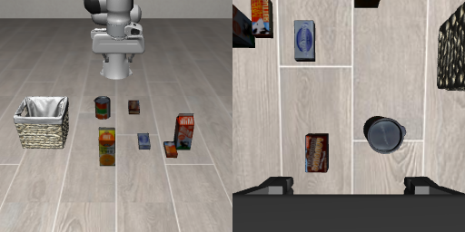
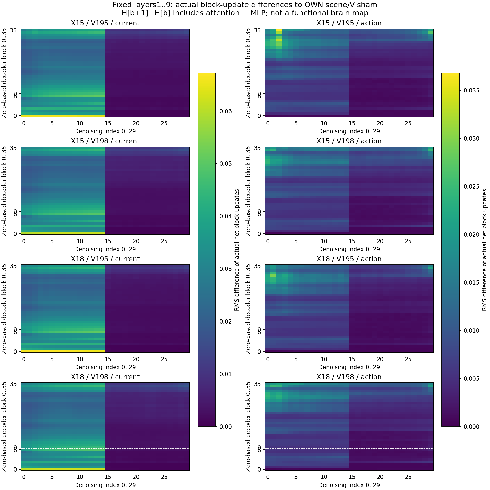
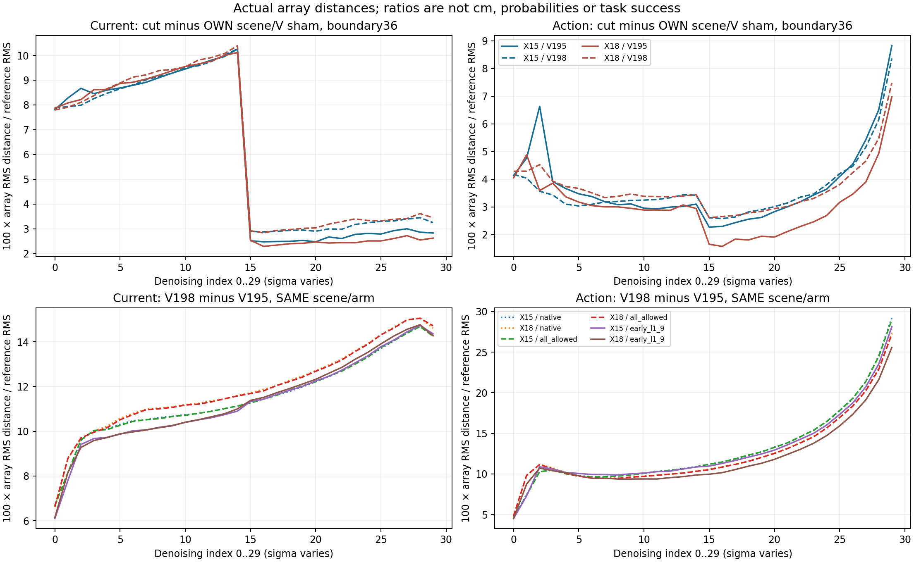
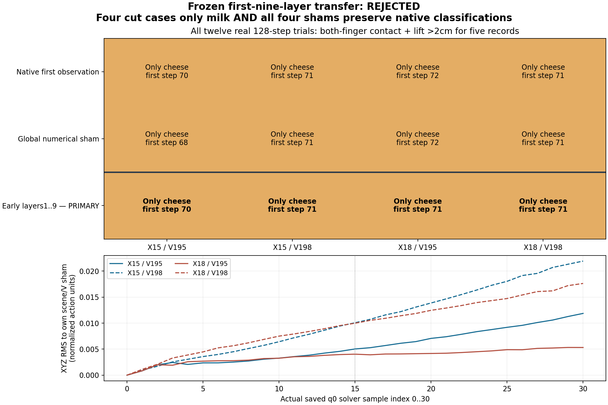

2026-10-04 · 最新：固定前9层改法，测试15和18厘米 · 代码、真实数组与录像
换个牛奶位置，前9层的改动没能救回抓取。
一直只查这个问题：指令是“抓牛奶，放进篮子”。牛奶移远后却抓奶酪盒。我们要找到导致转抓的具体内部计算，并验证改它能否恢复跟着牛奶抓。
之前在12厘米处，只改前9层的一条连接，A改抓牛奶、B仍抓牛奶。这次不改层数、不调强度，把牛奶移到15厘米和新的18厘米位置，检验它是否仍然跟着牛奶抓。
12条实际执行和内部数组CPU核验已完成，另一次独立原数组重算误差0。当前研究目标尚未完成。关于“网络有没有语言区、运动区”，可直接看功能分工与相关研究。
1. 这次只换牛奶位置，原样保留改法


每个位置有两份未来生成起点，195／198；动作随机起点始终为195。同位置的三种条件使用同一张照片、指令和机器人初态。195／198是未来生成的初始随机数组，不是两条指令或两张照片。
改的是内部读取：仅首轮前15次去噪、第1～9层，禁止50个当前视觉向量读取200个未来视觉向量。动作直接读取未来的连接保留。每条执行首轮16步后，重新拍照，后续7轮恢复原生推理，总计128步。
接口对照使用相同的计算接口，但保留全部连接；干预与自己同位置、同起点的接口对照比较。硬切边也会重新分配剩余attention权重，还未区分“移走的内容”和“改变的读取比例”。
2. 十二条全部结果：仍然抓奶酪盒
事先要求：四条干预都严格且只抓牛奶，并且四条接口对照保留各自原生抓取类别。没有看到结果后更换层段或成功判据。
| 牛奶位置／未来起点 | 原生 | 接口对照 | 前9层切边 |
|---|---|---|---|
| X+15cm／195 | 奶酪盒，第70步 | 奶酪盒，第68步 | 奶酪盒，第70步 |
| X+15cm／198 | 奶酪盒，第71步 | 奶酪盒，第71步 | 奶酪盒，第71步 |
| X+18cm／195 | 奶酪盒，第72步 | 奶酪盒，第72步 | 奶酪盒，第71步 |
| X+18cm／198 | 奶酪盒，第71步 | 奶酪盒，第71步 | 奶酪盒，第71步 |
这里的步数是严格窗口第一步：左右指垫同时接触、相对初态抬高严格超过2厘米，连续5份记录。全部物体都检查，不是只看牛奶有没有动，也不是最终放篮成功率。
被否定的是“这套改法能在新位置恢复牛奶抓取”。这不能反过来证明网络没识别到牛奶，也不能说这条通路完全没影响。下面实际数字显示内部和动作确实变了，但最终抓取类别没变。
3. 一次只看一条实际录像
默认看15厘米、起点195、前9层切边。都是MuJoCo实际执行，没有用生成视频代替执行。
当前：牛奶移15厘米，未来起点195，前9层切边：奶酪盒；严格窗口从第70步开始。这是MuJoCo实际执行；抓起不等于最终放篮成功。
4. 内部变了，为什么不能叫“牛奶区”？
首轮输出的XYZ动作，与自己接口对照的RMS距离如下。数字非零，说明动作数组确实受影响；最后仍抓奶酪盒，说明这点改变没有恢复目标选择。这是归一化动作数字的距离，不是厘米、概率或成功率。
| 固定前9层干预 | XYZ动作距离 | 实际抓起谁 |
|---|---|---|
| 15cm／195 | 0.011865 | 奶酪盒 |
| 15cm／198 | 0.021922 | 奶酪盒 |
| 18cm／195 | 0.005319 | 奶酪盒 |
| 18cm／198 | 0.017624 | 奶酪盒 |
展开：真实逐层热力图、数组与核验



首轮12组共360次网络计算，后续84轮共2520次，合计2880次。CPU核对1536条动作转换、96份完整模型记录、77组后续噪声配对、全部360份逐层文件和540处切边；作图新增模型、求解器和物理计算均为0。四条原生是新位置首次观察，不是独立重复，也没有与旧12厘米完整轨迹作相等性对照。
独立原数组重算另检查10836个真实接触与抬高条件、36份原PT导出字节、24个最终动作距离、32个t0内部距离、24个t0净更新距离，误差0。公开12份第1次去噪完整边界，另348份保留A6000；全部360份有来源SHA，统计覆盖全部时刻。没有记录全部QKV或未来逐层状态，执行目录中重复的t0边界不重复提交。
审计、实际数组和图 · 独立重算 · 全部12条实际执行 · 首轮协议、来源与真实数组
5. 网络也可能有“管语言”和“管运动”的部分
可能有，但更像功能倾向，不一定是整齐分开的两块区域。一层里面可以有许多小部件，语言与动作也可以在同一层交互。下面三项研究的证据强度不同。
机器人内部部件能改变运动。CoRL 2025的研究干预少量MLP单元，可以改变OpenVLA模拟执行，以及适配后π0-FAST真实UR5的运输高度。它说明内部部件能控制某些行为，没有证明存在一块纯运动皮层；其语义和动作相关表示遍布多层。论文原文
语言模型会学出不同处理偏好。Nature Communications 2024发现BERT不同attention head的计算，对人听故事时不同语言皮层位置的fMRI活动有不同预测关联。它不是一个head对应一个脑区的证明，也不是删除head后的因果检验。论文原文
人工网络也能学出成片的视觉功能地图。Neuron 2024的TDANN加入单元空间位置和近邻响应约束，训练后出现方向偏好图及面孔、身体等类别簇。额外空间约束很关键；不能推断普通Cosmos也有同样的二维皮层地图。论文原文
Cosmos3在结构上让文字处理与生成各用一套attention、MLP参数。当前视觉、未来画面和动作又共用生成通路，动作另有输出头。这是设计的分工；内部是否学出更细的语言或运动功能，要另做实验。
| 先只改变什么 | 再短暂干预一个小部件，检查什么 |
|---|---|
| 目标名字或目标位置 | 是否影响朝哪个物体去，同时保留一般运动能力？ |
| 目标不变，只改向上／向下等运动需求 | 是否影响运动方向，同时保留目标选择？ |
如果两类改动有不同的局部影响，才更支持功能分工。记录活动用于找候选，局部干预用于检验它实际做什么。当前还没有定位到这样的具体head或MLP单元。
下一步只查：移走的内容，还是改变的读取比例？
切边同时做了两件事：不再读未来内容，又把读取权重分给其他来源。下一批保持同一实际Q/K和全部key，只改未来V内容，再与硬切边比较，区分这两个解释。将使用真实attention计算，并保留接口对照。这个更细的实验还未执行，也未定位具体功能head。
保留旧结果：12厘米九层有效，18层预测失败
12厘米那批，第1～9层切边让A改抓牛奶、B仍抓牛奶；第10～18层A抓牛奶、B无严格抓起；第19～27层A抓黄油、B无严格抓起；第28～36层保留A奶酪、B牛奶。那批主要预测supported，这批跨位置预测rejected，两者都保留。
更早一次切第1～18层：A改抓牛奶，B没有严格抓起，主要预测rejected。联合干预可能有非线性交互，不能把九层与十八层效果相加当各层贡献。
旧九层全部数组和结论 · 旧九层全部执行 · 旧十八层数据 · 旧十八层执行 · 完整历史记录